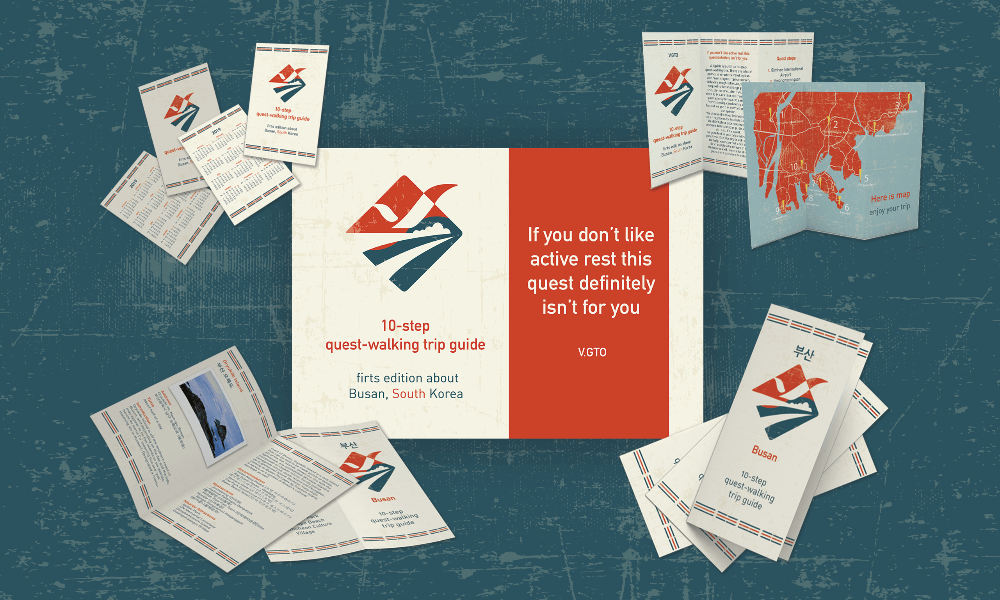

University project. This website is a part of this project.
This project was made for my nonexistent design studio. Logo design is based on wattles of my thumb. Some sketched variations of logo. Colors and different directions of lines. Ultimately, range was used as base for final lines of my
logo.
Colors and different directions of lines. Ultimately, range was used as base for final lines of my
logo.
 The simplest business card with embossed elements on white cardboard.
Some stuff with corporate identity.
The concept of sign for TATA DESIGN STUDIO.
The simplest business card with embossed elements on white cardboard.
Some stuff with corporate identity.
The concept of sign for TATA DESIGN STUDIO.
University project.
 The task was to design guide booklet with some advertisement materials. I chose South Korea for this periodical publication. First edition is about Busan city. As a concept for cover sheet I decided to mix crest of the city and flag of Korea. Main idea was to design
old looking booklet. Guide supposed to use it a lot during the trip, so it would look really vintage after
some period of exploitation.
As a concept for cover sheet I decided to mix crest of the city and flag of Korea. Main idea was to design
old looking booklet. Guide supposed to use it a lot during the trip, so it would look really vintage after
some period of exploitation.
 I used a slogan for guide, because it counts for active people, leaflet map is pinned in the middle of
booklet.
Elements of Korean flag are used in design as frames.
I used a slogan for guide, because it counts for active people, leaflet map is pinned in the middle of
booklet.
Elements of Korean flag are used in design as frames.
 And now have a look at the final design.
And now have a look at the final design.
Project for my own development.
 "그냥" means "just" in Korean. I do like the meaning, how it sounds and looks. I combined it with simple
drawing of my favorite flower.
I decided to design some corporate identity as if for cozy little cafe with pastry. (That part of work was
used in my studying project and I was participating in exhibition "Synergia" in Khmelnytskyi with it).
"그냥" means "just" in Korean. I do like the meaning, how it sounds and looks. I combined it with simple
drawing of my favorite flower.
I decided to design some corporate identity as if for cozy little cafe with pastry. (That part of work was
used in my studying project and I was participating in exhibition "Synergia" in Khmelnytskyi with it).
 Also, as a part of project for packaging design course in university, I developed an eco package for two
to go. I did everything from sketches, 3D model in SketchUp and real-sized sample with my own unique stamp.
Studies have been conducted in order to ration of maximum weight of products and density of paper.
Also, as a part of project for packaging design course in university, I developed an eco package for two
to go. I did everything from sketches, 3D model in SketchUp and real-sized sample with my own unique stamp.
Studies have been conducted in order to ration of maximum weight of products and density of paper.


Freelance project for supplier of luxury meat, located in Illinois, USA.
Their main product is bison, so it was chosen as base for branding. Customer had the following variants of logotypes before it. Also some web and polygraphic variants of advertising materials were designed.All of them was made in Adobe InDesign.
 Catalog "aesthetics" is periodical publication of nice and cozy cafes and restaurants in different
countries. First edition is about South Korea.
Catalog "aesthetics" is periodical publication of nice and cozy cafes and restaurants in different
countries. First edition is about South Korea.
 It contains original Instagram user’s photos (there are indicated real usernames under each photo),
English name and address.
It contains original Instagram user’s photos (there are indicated real usernames under each photo),
English name and address.
 This catalog is a part of my graduation thesis. It provides artworks of professors from my studying
department.
Here are all processes of designing: cover, half-titles, page making and other.
This catalog is a part of my graduation thesis. It provides artworks of professors from my studying
department.
Here are all processes of designing: cover, half-titles, page making and other.

 Catalog portfolio, university project.
Catalog portfolio, university project.


"Аделіні" is wedding and evening dresses salon, located in Khmelnytskyi, Ukraine.
I started to work with this project from the very beginning, so the name of salon was also suggested by me. The salon has specific location: it`s an old jewish building with really nice front side, so customer
wanted it to be their calling card. Some design elements were changed for the integrity and harmony of the
concept as a whole.
The salon has specific location: it`s an old jewish building with really nice front side, so customer
wanted it to be their calling card. Some design elements were changed for the integrity and harmony of the
concept as a whole.